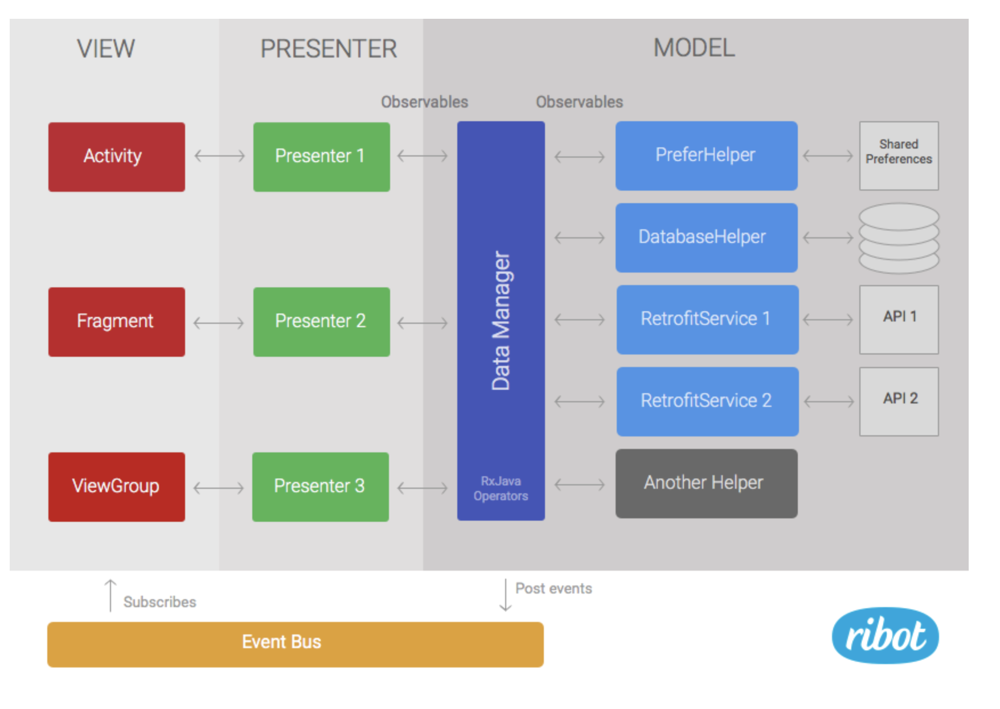
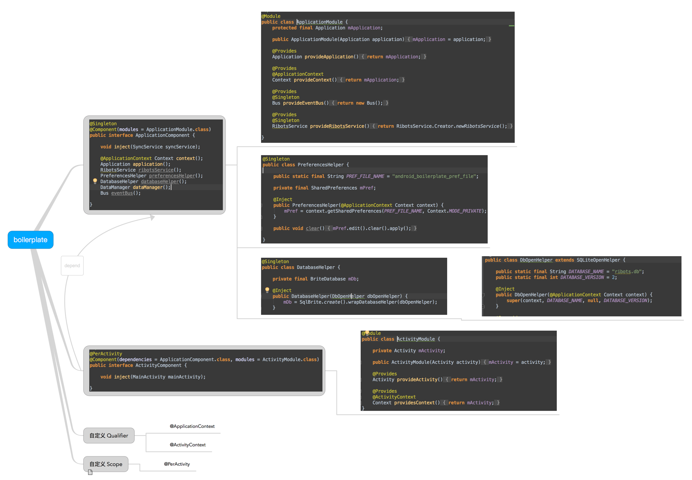
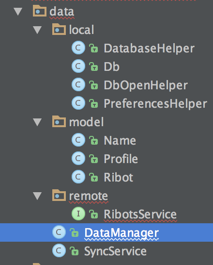

最近在 github 上看到一个 android 的框架，结合了 Rxjava + retrofit + dagger2 + mvp，结合了当下比较流行的框架，并且项目层次非常清晰，易于扩展和维护
项目总览

可以看到项目采用的 MVP 架构（ http://xuyushi.github.io/2016/02/28/MVP/ ）
与常规的 MVP 不同的是，在 modle 层和 view 层通过EventBus 连接，当数据发生变化时，发出对应的 event，注册了这个 event 的 view会采取对应的措施。举个例子，退出登录用在这样的情形就很合适，在退出登录后，我们可能不止一个 view 会发生变化，如果把这些写在每一个 Presenter 中无疑是很不简洁的代码
在 modle 层中，抽象出了一个 DataManger，通过DataManger 我们与数据的具体实现进行了解耦，在 P 层我们无需关注数据是来自 DB ,SP 还是网络。我们只关心拿到的数据对象，而在DataManger 和 具体的数据实现中 还有一层 Helper层，这层封装了对数据的具体操作，比如 DBHelper、SPHelper、RetrofitServie，有了这一层封装可以很方便我们进行扩展。
DataManger 和 Helper累 中的方法拿到的都是 Observeable ，从而方便我们对这个流进行操控。
具体分析
dagger2
项目使用了 dagger2 依赖注入框架解耦个层，使得单测和框架替换变得很容易
ApplicationComponent
首先看ApplicationComponent，他有一个Moudle，并且将这个Moudle中的提供的构造方法暴露出来，可以看到DatabaseHelper、PreferencesHelper等暴露出来的都是全局使用的对象
@Singleton
@Component(modules = ApplicationModule.class)
public interface ApplicationComponent {
void inject(SyncService syncService);
@ApplicationContext Context context();
Application application();
RibotsService ribotsService();
PreferencesHelper preferencesHelper();
DatabaseHelper databaseHelper();
DataManager dataManager();
Bus eventBus();
}
@Module
public class ApplicationModule {
protected final Application mApplication;
public ApplicationModule(Application application) {
mApplication = application;
}
@Provides
Application provideApplication() {
return mApplication;
}
@Provides
@ApplicationContext
Context provideContext() {
return mApplication;
}
@Provides
@Singleton
Bus provideEventBus() {
return new Bus();
}
@Provides
@Singleton
RibotsService provideRibotsService() {
return RibotsService.Creator.newRibotsService();
}
}
可以看到在ApplicationModule中的 provide 方法暴露出的方法对比ApplicationComponent中需要的方法，发现还缺了几项。DatabaseHelper、PreferencesHelper、DataManager
这是为毛捏？ 熟悉 dagger2的小伙伴可能已经明白了
** 复习 dagger**
dagger 创建类实例有2个维度可以创建
- 步骤1：查找Module中是否存在创建该类的方法。
- 步骤2：若存在创建类方法，查看该方法是否存在参数
- 步骤2.1：若存在参数，则按从步骤1开始依次初始化每个参数
- 步骤2.2：若不存在参数，则直接初始化该类实例，一次依赖注入到此结束
步骤3：若不存在创建类方法，则查找Inject注解的构造函数，看构造函数是否存在参数
- 步骤3.1：若存在参数，则从步骤1开始依次初始化每个参数
- 步骤3.2：若不存在参数，则直接初始化该类实例，一次依赖注入到此结束
因为在使用第三方代码时，我们无法修改源码的构造方法，所以使用 Module 来提供注入构造
所以再回来看DataManager的构造方法
@Inject
public DataManager(RibotsService ribotsService, PreferencesHelper preferencesHelper,
DatabaseHelper databaseHelper, EventPosterHelper eventPosterHelper) {
mRibotsService = ribotsService;
mPreferencesHelper = preferencesHelper;
mDatabaseHelper = databaseHelper;
mEventPoster = eventPosterHelper;
}
用@Inject标注了构造方法，当注入了DataManager时，在module中找不到对应的 provide 方法，变会在构造方法中寻找，在递归的找参数中的注入...
以下用一张图来概括

data
来看下整体的 data 包

分为 local 和 remote、model几个包
- local 主要是 SP、DB 相关
- remote 是网络相关的操作，这里就是一个 retrofit 的 service
- modle 中定义了 java bean
retrofit
再来看下 retrofit service 中
public interface RibotsService {
String ENDPOINT = "https://api.ribot.io/";
@GET("ribots")
Observable<List<Ribot>> getRibots();
/******** Helper class that sets up a new services *******/
class Creator {
public static RibotsService newRibotsService() {
Gson gson = new GsonBuilder()
.setDateFormat("yyyy-MM-dd'T'HH:mm:ss.SSS'Z'")
.create();
Retrofit retrofit = new Retrofit.Builder()
.baseUrl(RibotsService.ENDPOINT)
.addConverterFactory(GsonConverterFactory.create(gson))
.addCallAdapterFactory(RxJavaCallAdapterFactory.create())
.build();
return retrofit.create(RibotsService.class);
}
}
}
在构建了 Retrofit后再构建service，要是我来写的话会把Retrofit也用 dagger 注入的方式来提供。
DataManger
DataManger 基本上放的就是业务逻辑了，具体看个例子
public Observable<Ribot> syncRibots() {
return mRibotsService.getRibots()
.concatMap(new Func1<List<Ribot>, Observable<Ribot>>() {
@Override
public Observable<Ribot> call(List<Ribot> ribots) {
return mDatabaseHelper.setRibots(ribots);
}
});
}
在syncRibots方法中，我们通过retrofit 获得网络的数据，再用 DB 存储，再把结果用Observable的结构返回给 P层，在这个例子中是在一个 service 中调用这个方法
MVP
关于 MVP 这一块，个人的建议是使用谷歌官方的例子。更为简洁明了
也可以看我的这一篇实践
同样 P V 直接也可以使用 dagger 解耦。